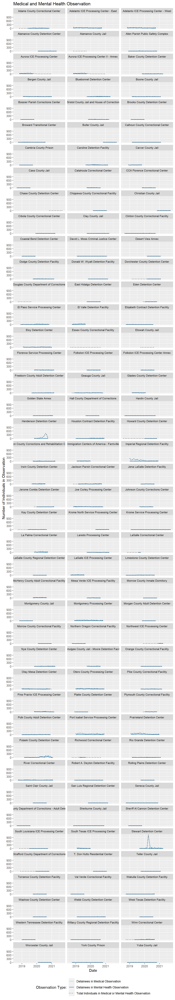
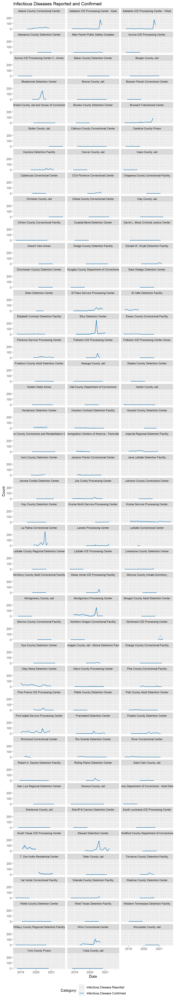
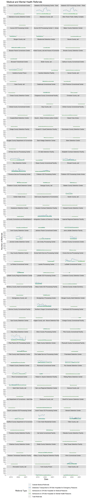
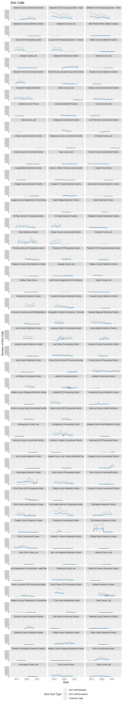
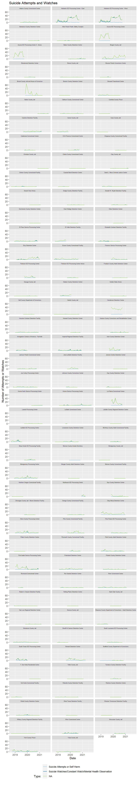
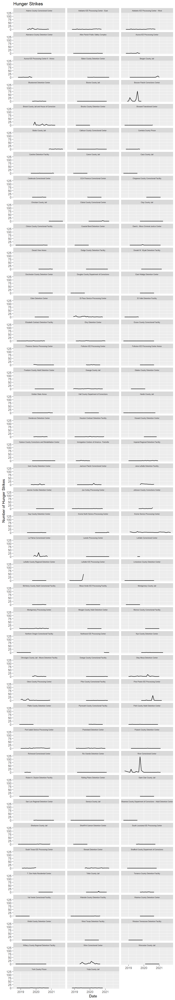

Section 8 Medical
8.1 Medical Observation
8.1.1 Summary Tables
| Type | Total |
|---|---|
| detainees_in_medical_observation | 20430 |
| detainees_in_mental_health_observation | 4789 |
| total_mental_medical_observation | 25219 |
| Facility | Total |
|---|---|
| Stewart Detention Center | 4650 |
| Imperial Regional Detention Facility | 3768 |
| Prairieland Detention Center | 3566 |
| Port Isabel Service Processing Center | 3494 |
| Henderson Detention Center | 2464 |
| Adelanto ICE Processing Center - East | 2382 |
| Adelanto ICE Processing Center - West | 2382 |
| Pulaski County Detention Center | 1920 |
| Montgomery Processing Center | 1896 |
| Otero County Processing Center | 1726 |
| Aurora ICE Processing Center | 1204 |
| Aurora ICE Processing Center II - Annex | 1204 |
| River Correctional Center | 1178 |
| El Valle Detention Facility | 1130 |
| La Palma Correctional Center | 1130 |
| El Paso Service Processing Center | 854 |
| Eloy Detention Center | 824 |
| South Texas ICE Processing Center | 804 |
| Caroline Detention Facility | 714 |
| LaSalle ICE Processing Center | 694 |
| Otay Mesa Detention Center | 694 |
| Immigration Centers of America - Farmville | 690 |
| McHenry County Adult Correctional Facility | 676 |
| Winn Correctional Center | 664 |
| Adams County Correctional Center | 558 |
| Florence Service Processing Center | 542 |
| Houston Contract Detention Facility | 536 |
| Jackson Parish Correctional Center | 514 |
| Pine Prairie ICE Processing Center | 496 |
| Irwin County Detention Center | 492 |
| Joe Corley Processing Center | 450 |
| Hudson County Corrections and Rehabilitation Center | 428 |
| Polk County Adult Detention Center | 364 |
| Bergen County Jail | 354 |
| Glades County Detention Center | 308 |
| Webb County Detention Center | 246 |
| Laredo Processing Center | 228 |
| Nye County Detention Center | 214 |
| Catahoula Correctional Center | 194 |
| York County Prison | 176 |
| Bristol County Jail and House of Correction | 174 |
| Baker County Detention Center | 158 |
| Northwest ICE Processing Center | 156 |
| Rio Grande Detention Center | 154 |
| Pike County Correctional Facility | 150 |
| Sherburne County Jail | 150 |
| Bluebonnet Detention Center | 142 |
| Folkston ICE Processing Center | 140 |
| Wakulla County Detention Facility | 118 |
| Broward Transitional Center | 116 |
| Mesa Verde ICE Processing Facility | 114 |
| Boone County Jail | 110 |
| Carver County Jail | 110 |
| Limestone County Detention Center | 110 |
| Geauga County Jail | 104 |
| Richwood Correctional Center | 100 |
| Dodge County Detention Facility | 96 |
| Torrance County Detention Facility | 94 |
| Allen Parish Public Safety Complex | 80 |
| Okmulgee County Jail - Moore Detention Facility | 76 |
| Worcester County Jail | 74 |
| Krome North Service Processing Center | 72 |
| Shawnee County Department of Corrections - Adult Detention Center | 68 |
| South Louisiana ICE Processing Center | 66 |
| CCA Florence Correctional Center | 58 |
| Clinton County Correctional Facility | 58 |
| Freeborn County Adult Detention Center | 58 |
| Jena LaSalle Detention Facility | 52 |
| Folkston ICE Processing Center Annex | 48 |
| Seneca County Jail | 48 |
| Clay County Jail | 46 |
| David L. Moss Criminal Justice Center | 46 |
| Strafford County Department of Corrections | 46 |
| Plymouth County Correctional Facility | 40 |
| Sheriff Al Cannon Detention Center | 36 |
| Kay County Detention Center | 34 |
| Johnson County Corrections Center | 30 |
| Robert A. Deyton Detention Facility | 28 |
| Butler County Jail | 26 |
| Elizabeth Contract Detention Facility | 24 |
| San Luis Regional Detention Center | 24 |
| Golden State Annex | 22 |
| Donald W. Wyatt Detention Facility | 20 |
| Alamance County Detention Center | 14 |
| Washoe County Detention Center | 14 |
| Bossier Parish Corrections Center | 12 |
| Coastal Bend Detention Center | 12 |
| LaSalle Correctional Center | 12 |
| Brooks County Detention Center | 10 |
| Calhoun County Correctional Center | 10 |
| Jerome Combs Detention Center | 10 |
| Chippewa County Correctional Facility | 8 |
| T. Don Hutto Residential Center | 8 |
| West Texas Detention Facility | 8 |
| Teller County Jail | 6 |
| Desert View Annex | 4 |
| Hardin County Jail | 4 |
| Northern Oregon Correctional Facility | 4 |
| Saint Clair County Jail | 4 |
| Cambria County Prison | 2 |
| Cibola County Correctional Center | 2 |
| Eden Detention Center | 2 |
| Hall County Department of Corrections | 2 |
| Monroe County Inmate Dormitory | 2 |
| Montgomery County Jail | 2 |
| Rolling Plains Detention Center | 2 |
| Alamance County Jail | 0 |
| Cass County Jail | 0 |
| Chase County Detention Center | 0 |
| Christian County Jail | 0 |
| Dorchester County Detention Center | 0 |
| Douglas County Department of Corrections | 0 |
| East Hidalgo Detention Center | 0 |
| Essex County Correctional Facility | 0 |
| Etowah County Jail | 0 |
| Howard County Detention Center | 0 |
| Krome Service Processing Center | 0 |
| LaSalle County Regional Detention Center | 0 |
| Morgan County Adult Detention Center | 0 |
| Morrow County Correctional Facility | 0 |
| Orange County Correctional Facility | 0 |
| Platte County Detention Center | 0 |
| Val Verde Correctional Facility | 0 |
| Western Tennessee Detention Facility | 0 |
| Willacy County Regional Detention Facility | 0 |
| Yuba County Jail | 0 |
8.1.2 Facet Plot of Medical Mental Observation by Facility

8.2 Infections Disease
8.2.1 Summary Table
| Type | Total |
|---|---|
| infectious_disease_reported | 9578 |
| infections_disease_confirmed | 9666 |
| Facility | Total |
|---|---|
| Port Isabel Service Processing Center | 1502 |
| South Texas ICE Processing Center | 1335 |
| Stewart Detention Center | 1270 |
| Otay Mesa Detention Center | 1181 |
| La Palma Correctional Center | 1008 |
| Winn Correctional Center | 960 |
| Montgomery Processing Center | 926 |
| Eloy Detention Center | 909 |
| El Paso Service Processing Center | 676 |
| Adelanto ICE Processing Center - East | 631 |
| Adelanto ICE Processing Center - West | 631 |
| Bluebonnet Detention Center | 624 |
| Florence Service Processing Center | 532 |
| Adams County Correctional Center | 520 |
| Broward Transitional Center | 495 |
| Krome Service Processing Center | 442 |
| Henderson Detention Center | 441 |
| El Valle Detention Facility | 412 |
| Imperial Regional Detention Facility | 405 |
| T. Don Hutto Residential Center | 268 |
| Folkston ICE Processing Center | 246 |
| Pulaski County Detention Center | 224 |
| Pine Prairie ICE Processing Center | 196 |
| Caroline Detention Facility | 192 |
| River Correctional Center | 185 |
| Prairieland Detention Center | 182 |
| Northwest ICE Processing Center | 179 |
| Immigration Centers of America - Farmville | 165 |
| Essex County Correctional Facility | 150 |
| Joe Corley Processing Center | 148 |
| Rio Grande Detention Center | 138 |
| Elizabeth Contract Detention Facility | 129 |
| Torrance County Detention Facility | 126 |
| Mesa Verde ICE Processing Facility | 124 |
| Rolling Plains Detention Center | 124 |
| CCA Florence Correctional Center | 122 |
| Houston Contract Detention Facility | 110 |
| Jena LaSalle Detention Facility | 90 |
| Okmulgee County Jail - Moore Detention Facility | 84 |
| Donald W. Wyatt Detention Facility | 78 |
| Polk County Adult Detention Center | 76 |
| Jackson Parish Correctional Center | 75 |
| Irwin County Detention Center | 74 |
| Otero County Processing Center | 70 |
| Richwood Correctional Center | 67 |
| Pike County Correctional Facility | 64 |
| Wakulla County Detention Facility | 62 |
| Laredo Processing Center | 55 |
| McHenry County Adult Correctional Facility | 44 |
| Hudson County Corrections and Rehabilitation Center | 40 |
| Webb County Detention Center | 35 |
| Bergen County Jail | 34 |
| Washoe County Detention Center | 34 |
| Allen Parish Public Safety Complex | 30 |
| Krome North Service Processing Center | 30 |
| Folkston ICE Processing Center Annex | 28 |
| Limestone County Detention Center | 28 |
| Shawnee County Department of Corrections - Adult Detention Center | 24 |
| Robert A. Deyton Detention Facility | 23 |
| Saint Clair County Jail | 21 |
| South Louisiana ICE Processing Center | 20 |
| Catahoula Correctional Center | 19 |
| Sherburne County Jail | 18 |
| Glades County Detention Center | 11 |
| Val Verde Correctional Facility | 10 |
| Bristol County Jail and House of Correction | 8 |
| Clay County Jail | 8 |
| David L. Moss Criminal Justice Center | 7 |
| Freeborn County Adult Detention Center | 7 |
| Brooks County Detention Center | 6 |
| Calhoun County Correctional Center | 6 |
| Hardin County Jail | 6 |
| Sheriff Al Cannon Detention Center | 5 |
| York County Prison | 5 |
| Cambria County Prison | 4 |
| Coastal Bend Detention Center | 4 |
| Dodge County Detention Facility | 4 |
| Golden State Annex | 4 |
| LaSalle ICE Processing Center | 4 |
| Geauga County Jail | 3 |
| Baker County Detention Center | 2 |
| Butler County Jail | 2 |
| Desert View Annex | 2 |
| LaSalle County Regional Detention Center | 2 |
| Strafford County Department of Corrections | 2 |
| Johnson County Corrections Center | 1 |
| Alamance County Detention Center | 0 |
| Aurora ICE Processing Center | 0 |
| Aurora ICE Processing Center II - Annex | 0 |
| Boone County Jail | 0 |
| Bossier Parish Corrections Center | 0 |
| Carver County Jail | 0 |
| Cass County Jail | 0 |
| Chippewa County Correctional Facility | 0 |
| Christian County Jail | 0 |
| Cibola County Correctional Center | 0 |
| Clinton County Correctional Facility | 0 |
| Dorchester County Detention Center | 0 |
| Douglas County Department of Corrections | 0 |
| East Hidalgo Detention Center | 0 |
| Eden Detention Center | 0 |
| Hall County Department of Corrections | 0 |
| Howard County Detention Center | 0 |
| Jerome Combs Detention Center | 0 |
| Kay County Detention Center | 0 |
| LaSalle Correctional Center | 0 |
| Monroe County Inmate Dormitory | 0 |
| Montgomery County Jail | 0 |
| Morgan County Adult Detention Center | 0 |
| Morrow County Correctional Facility | 0 |
| Northern Oregon Correctional Facility | 0 |
| Nye County Detention Center | 0 |
| Orange County Correctional Facility | 0 |
| Platte County Detention Center | 0 |
| San Luis Regional Detention Center | 0 |
| Seneca County Jail | 0 |
| Teller County Jail | 0 |
| West Texas Detention Facility | 0 |
| Western Tennessee Detention Facility | 0 |
| Willacy County Regional Detention Facility | 0 |
| Worcester County Jail | 0 |
| Yuba County Jail | 0 |
8.2.2 Facet Plot of Infectious Disease by Facility

8.3 Medical and Mental Health Referrals
| Type | Total |
|---|---|
| outside_medical_referrals | 43386 |
| detainees_transported_to_off_site_hospitals_for_emergency_care | 9380 |
| admissions_to_off_site_hospitals_for_medical_reasons | 2963 |
| admissions_to_off_site_hospitals_for_mental_health_reasons | 585 |
| total_referrals | 56314 |
| Facility | Total |
|---|---|
| Adelanto ICE Processing Center - East | 11502 |
| Adelanto ICE Processing Center - West | 11502 |
| Otay Mesa Detention Center | 10012 |
| South Texas ICE Processing Center | 5532 |
| Montgomery Processing Center | 4512 |
| Port Isabel Service Processing Center | 3996 |
| El Paso Service Processing Center | 3686 |
| Stewart Detention Center | 3350 |
| Broward Transitional Center | 3192 |
| Eloy Detention Center | 3156 |
| Krome Service Processing Center | 3122 |
| Prairieland Detention Center | 3010 |
| Irwin County Detention Center | 2960 |
| Jena LaSalle Detention Facility | 2936 |
| Elizabeth Contract Detention Facility | 2844 |
| Houston Contract Detention Facility | 2738 |
| Pulaski County Detention Center | 2238 |
| River Correctional Center | 2162 |
| LaSalle ICE Processing Center | 1814 |
| Winn Correctional Center | 1690 |
| Imperial Regional Detention Facility | 1500 |
| Essex County Correctional Facility | 1416 |
| Glades County Detention Center | 1156 |
| Jackson Parish Correctional Center | 956 |
| Pine Prairie ICE Processing Center | 946 |
| York County Prison | 902 |
| La Palma Correctional Center | 848 |
| Catahoula Correctional Center | 816 |
| South Louisiana ICE Processing Center | 780 |
| Polk County Adult Detention Center | 776 |
| Webb County Detention Center | 754 |
| Aurora ICE Processing Center | 722 |
| Aurora ICE Processing Center II - Annex | 722 |
| Otero County Processing Center | 684 |
| Florence Service Processing Center | 668 |
| Yuba County Jail | 618 |
| Joe Corley Processing Center | 598 |
| Bergen County Jail | 584 |
| Caroline Detention Facility | 524 |
| Immigration Centers of America - Farmville | 520 |
| Sherburne County Jail | 506 |
| Hudson County Corrections and Rehabilitation Center | 454 |
| Adams County Correctional Center | 440 |
| T. Don Hutto Residential Center | 436 |
| Rio Grande Detention Center | 422 |
| Mesa Verde ICE Processing Facility | 396 |
| Krome North Service Processing Center | 362 |
| Folkston ICE Processing Center | 356 |
| El Valle Detention Facility | 338 |
| CCA Florence Correctional Center | 330 |
| Baker County Detention Center | 322 |
| Strafford County Department of Corrections | 268 |
| Calhoun County Correctional Center | 266 |
| Clay County Jail | 254 |
| Folkston ICE Processing Center Annex | 240 |
| Okmulgee County Jail - Moore Detention Facility | 236 |
| Carver County Jail | 218 |
| Johnson County Corrections Center | 218 |
| Dodge County Detention Facility | 200 |
| Richwood Correctional Center | 200 |
| Henderson Detention Center | 196 |
| Donald W. Wyatt Detention Facility | 194 |
| Clinton County Correctional Facility | 192 |
| Limestone County Detention Center | 186 |
| Laredo Processing Center | 158 |
| Orange County Correctional Facility | 158 |
| Bossier Parish Corrections Center | 154 |
| Kay County Detention Center | 148 |
| Northwest ICE Processing Center | 138 |
| Bluebonnet Detention Center | 132 |
| Pike County Correctional Facility | 132 |
| McHenry County Adult Correctional Facility | 128 |
| Allen Parish Public Safety Complex | 116 |
| Bristol County Jail and House of Correction | 114 |
| Jerome Combs Detention Center | 108 |
| Butler County Jail | 100 |
| Geauga County Jail | 98 |
| Plymouth County Correctional Facility | 96 |
| Torrance County Detention Facility | 96 |
| Freeborn County Adult Detention Center | 88 |
| David L. Moss Criminal Justice Center | 86 |
| Hardin County Jail | 84 |
| Boone County Jail | 74 |
| Wakulla County Detention Facility | 72 |
| Golden State Annex | 58 |
| Eden Detention Center | 54 |
| Rolling Plains Detention Center | 52 |
| Saint Clair County Jail | 52 |
| LaSalle Correctional Center | 50 |
| Northern Oregon Correctional Facility | 48 |
| Chippewa County Correctional Facility | 44 |
| Worcester County Jail | 38 |
| Teller County Jail | 34 |
| Howard County Detention Center | 32 |
| Cambria County Prison | 26 |
| Val Verde Correctional Facility | 20 |
| Robert A. Deyton Detention Facility | 18 |
| Cibola County Correctional Center | 16 |
| Hall County Department of Corrections | 16 |
| Nye County Detention Center | 14 |
| San Luis Regional Detention Center | 14 |
| West Texas Detention Facility | 14 |
| Seneca County Jail | 12 |
| Sheriff Al Cannon Detention Center | 12 |
| Brooks County Detention Center | 10 |
| Morgan County Adult Detention Center | 10 |
| Coastal Bend Detention Center | 8 |
| Montgomery County Jail | 8 |
| Desert View Annex | 4 |
| LaSalle County Regional Detention Center | 4 |
| Alamance County Detention Center | 2 |
| Platte County Detention Center | 2 |
| Western Tennessee Detention Facility | 2 |
| Alamance County Jail | 0 |
| Cass County Jail | 0 |
| Chase County Detention Center | 0 |
| Christian County Jail | 0 |
| Dorchester County Detention Center | 0 |
| Douglas County Department of Corrections | 0 |
| East Hidalgo Detention Center | 0 |
| Etowah County Jail | 0 |
| Monroe County Inmate Dormitory | 0 |
| Morrow County Correctional Facility | 0 |
| Shawnee County Department of Corrections - Adult Detention Center | 0 |
| Washoe County Detention Center | 0 |
| Willacy County Regional Detention Facility | 0 |

8.4 Sick Call Requests and Encounters
| Type | Total |
|---|---|
| sick_call_requests | 648941 |
| sick_call_encounters | 649039 |
| total_sick_call | 1287573 |
| Facility | Total |
|---|---|
| Adelanto ICE Processing Center - East | 133554 |
| Adelanto ICE Processing Center - West | 133554 |
| Port Isabel Service Processing Center | 119616 |
| South Texas ICE Processing Center | 97628 |
| Rio Grande Detention Center | 96618 |
| Montgomery Processing Center | 88222 |
| Otay Mesa Detention Center | 85946 |
| Eloy Detention Center | 79596 |
| Prairieland Detention Center | 73904 |
| Otero County Processing Center | 60776 |
| Imperial Regional Detention Facility | 60392 |
| Broward Transitional Center | 60056 |
| River Correctional Center | 58448 |
| Polk County Adult Detention Center | 58096 |
| El Paso Service Processing Center | 56652 |
| Henderson Detention Center | 54112 |
| Stewart Detention Center | 53988 |
| Jackson Parish Correctional Center | 52726 |
| Houston Contract Detention Facility | 47720 |
| Irwin County Detention Center | 47252 |
| Aurora ICE Processing Center | 46356 |
| Aurora ICE Processing Center II - Annex | 46356 |
| Krome Service Processing Center | 46114 |
| Essex County Correctional Facility | 43804 |
| Webb County Detention Center | 43370 |
| El Valle Detention Facility | 39642 |
| Winn Correctional Center | 39572 |
| Joe Corley Processing Center | 33512 |
| LaSalle ICE Processing Center | 32800 |
| La Palma Correctional Center | 32064 |
| Adams County Correctional Center | 32050 |
| Immigration Centers of America - Farmville | 31622 |
| Calhoun County Correctional Center | 30244 |
| York County Prison | 29820 |
| Jena LaSalle Detention Facility | 28858 |
| Florence Service Processing Center | 28716 |
| Bossier Parish Corrections Center | 25768 |
| Orange County Correctional Facility | 25490 |
| Elizabeth Contract Detention Facility | 23740 |
| Catahoula Correctional Center | 23224 |
| Laredo Processing Center | 22564 |
| Sherburne County Jail | 22128 |
| Mesa Verde ICE Processing Facility | 20672 |
| Folkston ICE Processing Center | 19144 |
| McHenry County Adult Correctional Facility | 18490 |
| Pine Prairie ICE Processing Center | 18048 |
| Torrance County Detention Facility | 15532 |
| Caroline Detention Facility | 15524 |
| South Louisiana ICE Processing Center | 15216 |
| Bluebonnet Detention Center | 12618 |
| Donald W. Wyatt Detention Facility | 11930 |
| Hudson County Corrections and Rehabilitation Center | 11542 |
| Yuba County Jail | 9800 |
| Baker County Detention Center | 9150 |
| Pulaski County Detention Center | 9066 |
| Richwood Correctional Center | 8420 |
| Geauga County Jail | 8066 |
| Folkston ICE Processing Center Annex | 7556 |
| Johnson County Corrections Center | 7256 |
| Okmulgee County Jail - Moore Detention Facility | 7048 |
| Pike County Correctional Facility | 6960 |
| Wakulla County Detention Facility | 6322 |
| Allen Parish Public Safety Complex | 6104 |
| CCA Florence Correctional Center | 5660 |
| Glades County Detention Center | 5531 |
| T. Don Hutto Residential Center | 5364 |
| Clinton County Correctional Facility | 4832 |
| Clay County Jail | 4702 |
| Limestone County Detention Center | 4668 |
| Bristol County Jail and House of Correction | 4532 |
| David L. Moss Criminal Justice Center | 4348 |
| Bergen County Jail | 4324 |
| Kay County Detention Center | 4052 |
| Krome North Service Processing Center | 3910 |
| Carver County Jail | 3880 |
| Hardin County Jail | 3376 |
| Northwest ICE Processing Center | 3232 |
| Golden State Annex | 2362 |
| Butler County Jail | 2348 |
| Jerome Combs Detention Center | 2172 |
| Worcester County Jail | 2120 |
| Nye County Detention Center | 1826 |
| Morgan County Adult Detention Center | 1752 |
| Boone County Jail | 1656 |
| Cambria County Prison | 1484 |
| Freeborn County Adult Detention Center | 1446 |
| Dodge County Detention Facility | 1418 |
| Montgomery County Jail | 1316 |
| Val Verde Correctional Facility | 1298 |
| LaSalle Correctional Center | 1092 |
| Howard County Detention Center | 1052 |
| Strafford County Department of Corrections | 1014 |
| Rolling Plains Detention Center | 912 |
| Northern Oregon Correctional Facility | 828 |
| Chippewa County Correctional Facility | 770 |
| Alamance County Detention Center | 720 |
| West Texas Detention Facility | 668 |
| Saint Clair County Jail | 640 |
| Coastal Bend Detention Center | 592 |
| Cibola County Correctional Center | 518 |
| Teller County Jail | 440 |
| Morrow County Correctional Facility | 368 |
| Platte County Detention Center | 312 |
| Shawnee County Department of Corrections - Adult Detention Center | 264 |
| Seneca County Jail | 210 |
| Desert View Annex | 130 |
| LaSalle County Regional Detention Center | 124 |
| Christian County Jail | 48 |
| Brooks County Detention Center | 42 |
| San Luis Regional Detention Center | 38 |
| Washoe County Detention Center | 28 |
| Dorchester County Detention Center | 0 |
| East Hidalgo Detention Center | 0 |
| Eden Detention Center | 0 |
| Robert A. Deyton Detention Facility | 0 |
| Sheriff Al Cannon Detention Center | 0 |
| Western Tennessee Detention Facility | 0 |
| Willacy County Regional Detention Facility | 0 |

8.5 Suicide Attempts and Watches
The following shows Suicide Attempts and Suicide Watches based on the status of the data as of 2021-07-14. The numbers are subject to change.
| Type | Total |
|---|---|
| suicide_attempts_or_self_harm | 244 |
| suicide_watches_constant_watch_mental_health_observation | 5122 |
| total | 5364 |
| Facility | Total |
|---|---|
| Adelanto ICE Processing Center - East | 878 |
| Adelanto ICE Processing Center - West | 878 |
| Henderson Detention Center | 750 |
| Aurora ICE Processing Center | 606 |
| Aurora ICE Processing Center II - Annex | 606 |
| Bergen County Jail | 468 |
| La Palma Correctional Center | 402 |
| Bristol County Jail and House of Correction | 390 |
| Port Isabel Service Processing Center | 358 |
| Otay Mesa Detention Center | 282 |
| Stewart Detention Center | 272 |
| Eloy Detention Center | 246 |
| York County Prison | 214 |
| Otero County Processing Center | 192 |
| Montgomery Processing Center | 182 |
| Irwin County Detention Center | 178 |
| Prairieland Detention Center | 158 |
| South Texas ICE Processing Center | 158 |
| Essex County Correctional Facility | 156 |
| Caroline Detention Facility | 144 |
| Pike County Correctional Facility | 144 |
| Imperial Regional Detention Facility | 134 |
| Folkston ICE Processing Center | 122 |
| River Correctional Center | 122 |
| Polk County Adult Detention Center | 114 |
| Nye County Detention Center | 106 |
| Florence Service Processing Center | 104 |
| Glades County Detention Center | 102 |
| LaSalle ICE Processing Center | 102 |
| Winn Correctional Center | 92 |
| El Valle Detention Facility | 86 |
| Immigration Centers of America - Farmville | 86 |
| El Paso Service Processing Center | 84 |
| Krome Service Processing Center | 74 |
| Sherburne County Jail | 74 |
| Houston Contract Detention Facility | 68 |
| Jena LaSalle Detention Facility | 68 |
| Broward Transitional Center | 64 |
| Joe Corley Processing Center | 64 |
| Adams County Correctional Center | 62 |
| Northwest ICE Processing Center | 58 |
| Baker County Detention Center | 56 |
| Limestone County Detention Center | 56 |
| Carver County Jail | 54 |
| Hudson County Corrections and Rehabilitation Center | 54 |
| Mesa Verde ICE Processing Facility | 52 |
| Elizabeth Contract Detention Facility | 50 |
| Pulaski County Detention Center | 50 |
| Pine Prairie ICE Processing Center | 48 |
| Webb County Detention Center | 48 |
| Jackson Parish Correctional Center | 46 |
| Plymouth County Correctional Facility | 42 |
| Rio Grande Detention Center | 40 |
| Calhoun County Correctional Center | 38 |
| CCA Florence Correctional Center | 36 |
| McHenry County Adult Correctional Facility | 32 |
| Strafford County Department of Corrections | 32 |
| David L. Moss Criminal Justice Center | 30 |
| South Louisiana ICE Processing Center | 30 |
| Donald W. Wyatt Detention Facility | 24 |
| Folkston ICE Processing Center Annex | 24 |
| Yuba County Jail | 24 |
| Butler County Jail | 22 |
| Orange County Correctional Facility | 22 |
| Torrance County Detention Facility | 22 |
| Worcester County Jail | 22 |
| Johnson County Corrections Center | 20 |
| Shawnee County Department of Corrections - Adult Detention Center | 20 |
| Bluebonnet Detention Center | 18 |
| Boone County Jail | 18 |
| Allen Parish Public Safety Complex | 16 |
| Catahoula Correctional Center | 16 |
| Clinton County Correctional Facility | 16 |
| Kay County Detention Center | 14 |
| Alamance County Detention Center | 12 |
| Val Verde Correctional Facility | 12 |
| Wakulla County Detention Facility | 12 |
| Bossier Parish Corrections Center | 10 |
| Dodge County Detention Facility | 10 |
| Howard County Detention Center | 10 |
| Okmulgee County Jail - Moore Detention Facility | 10 |
| Seneca County Jail | 10 |
| Clay County Jail | 8 |
| Geauga County Jail | 8 |
| Krome North Service Processing Center | 8 |
| Laredo Processing Center | 8 |
| Richwood Correctional Center | 8 |
| Robert A. Deyton Detention Facility | 8 |
| San Luis Regional Detention Center | 8 |
| Coastal Bend Detention Center | 6 |
| Golden State Annex | 6 |
| Sheriff Al Cannon Detention Center | 6 |
| Freeborn County Adult Detention Center | 4 |
| Hardin County Jail | 4 |
| LaSalle Correctional Center | 4 |
| Morgan County Adult Detention Center | 4 |
| Cambria County Prison | 2 |
| Chippewa County Correctional Facility | 2 |
| Desert View Annex | 2 |
| Hall County Department of Corrections | 2 |
| Jerome Combs Detention Center | 2 |
| Northern Oregon Correctional Facility | 2 |
| West Texas Detention Facility | 2 |
| Brooks County Detention Center | 0 |
| Cass County Jail | 0 |
| Christian County Jail | 0 |
| Cibola County Correctional Center | 0 |
| Dorchester County Detention Center | 0 |
| East Hidalgo Detention Center | 0 |
| Eden Detention Center | 0 |
| LaSalle County Regional Detention Center | 0 |
| Monroe County Inmate Dormitory | 0 |
| Montgomery County Jail | 0 |
| Morrow County Correctional Facility | 0 |
| Platte County Detention Center | 0 |
| Rolling Plains Detention Center | 0 |
| Saint Clair County Jail | 0 |
| T. Don Hutto Residential Center | 0 |
| Teller County Jail | 0 |
| Washoe County Detention Center | 0 |
| Western Tennessee Detention Facility | 0 |
| Willacy County Regional Detention Facility | 0 |

8.6 Hunger Strikes
There were 1337 at 74 facilities, Table 8.6 provides a breakdown of hunger strikes by facility and Figure 8.1 is a facet plot of hunger strikes by facility.
| Facility | Total Hunger Strikes |
|---|---|
| River Correctional Center | 228 |
| Bossier Parish Corrections Center | 136 |
| Winn Correctional Center | 85 |
| Krome Service Processing Center | 71 |
| La Palma Correctional Center | 62 |
| LaSalle ICE Processing Center | 53 |
| Otero County Processing Center | 51 |
| Jena LaSalle Detention Facility | 49 |
| Bristol County Jail and House of Correction | 48 |
| Otay Mesa Detention Center | 48 |
| El Paso Service Processing Center | 46 |
| Pine Prairie ICE Processing Center | 42 |
| Port Isabel Service Processing Center | 35 |
| Adelanto ICE Processing Center - East | 28 |
| Adelanto ICE Processing Center - West | 28 |
| Adams County Correctional Center | 25 |
| Stewart Detention Center | 19 |
| Montgomery Processing Center | 18 |
| Prairieland Detention Center | 17 |
| Bergen County Jail | 15 |
| Jackson Parish Correctional Center | 15 |
| Irwin County Detention Center | 14 |
| Okmulgee County Jail - Moore Detention Facility | 14 |
| Johnson County Corrections Center | 13 |
| Geauga County Jail | 11 |
| Imperial Regional Detention Facility | 11 |
| South Texas ICE Processing Center | 11 |
| Florence Service Processing Center | 8 |
| Teller County Jail | 8 |
| Butler County Jail | 7 |
| Houston Contract Detention Facility | 7 |
| Aurora ICE Processing Center | 6 |
| Aurora ICE Processing Center II - Annex | 6 |
| Immigration Centers of America - Farmville | 6 |
| Elizabeth Contract Detention Facility | 5 |
| Eloy Detention Center | 5 |
| Folkston ICE Processing Center | 5 |
| Plymouth County Correctional Facility | 5 |
| Sherburne County Jail | 5 |
| Torrance County Detention Facility | 5 |
| Yuba County Jail | 5 |
| Cibola County Correctional Center | 4 |
| David L. Moss Criminal Justice Center | 4 |
| Joe Corley Processing Center | 4 |
| Krome North Service Processing Center | 4 |
| Bluebonnet Detention Center | 3 |
| Henderson Detention Center | 3 |
| Pike County Correctional Facility | 3 |
| York County Prison | 3 |
| Baker County Detention Center | 2 |
| Calhoun County Correctional Center | 2 |
| Caroline Detention Facility | 2 |
| Golden State Annex | 2 |
| McHenry County Adult Correctional Facility | 2 |
| Nye County Detention Center | 2 |
| Polk County Adult Detention Center | 2 |
| Wakulla County Detention Facility | 2 |
| Allen Parish Public Safety Complex | 1 |
| Broward Transitional Center | 1 |
| Cambria County Prison | 1 |
| Catahoula Correctional Center | 1 |
| CCA Florence Correctional Center | 1 |
| Clinton County Correctional Facility | 1 |
| Desert View Annex | 1 |
| El Valle Detention Facility | 1 |
| Hudson County Corrections and Rehabilitation Center | 1 |
| Kay County Detention Center | 1 |
| Northern Oregon Correctional Facility | 1 |
| Northwest ICE Processing Center | 1 |
| Orange County Correctional Facility | 1 |
| Pulaski County Detention Center | 1 |
| Richwood Correctional Center | 1 |
| San Luis Regional Detention Center | 1 |
| South Louisiana ICE Processing Center | 1 |
| Alamance County Detention Center | 0 |
| Boone County Jail | 0 |
| Brooks County Detention Center | 0 |
| Carver County Jail | 0 |
| Cass County Jail | 0 |
| Chippewa County Correctional Facility | 0 |
| Christian County Jail | 0 |
| Clay County Jail | 0 |
| Coastal Bend Detention Center | 0 |
| Dodge County Detention Facility | 0 |
| Donald W. Wyatt Detention Facility | 0 |
| Dorchester County Detention Center | 0 |
| Douglas County Department of Corrections | 0 |
| East Hidalgo Detention Center | 0 |
| Eden Detention Center | 0 |
| Essex County Correctional Facility | 0 |
| Folkston ICE Processing Center Annex | 0 |
| Freeborn County Adult Detention Center | 0 |
| Glades County Detention Center | 0 |
| Hall County Department of Corrections | 0 |
| Hardin County Jail | 0 |
| Howard County Detention Center | 0 |
| Jerome Combs Detention Center | 0 |
| Laredo Processing Center | 0 |
| LaSalle Correctional Center | 0 |
| LaSalle County Regional Detention Center | 0 |
| Limestone County Detention Center | 0 |
| Mesa Verde ICE Processing Facility | 0 |
| Montgomery County Jail | 0 |
| Morgan County Adult Detention Center | 0 |
| Morrow County Correctional Facility | 0 |
| Platte County Detention Center | 0 |
| Rio Grande Detention Center | 0 |
| Robert A. Deyton Detention Facility | 0 |
| Rolling Plains Detention Center | 0 |
| Saint Clair County Jail | 0 |
| Seneca County Jail | 0 |
| Shawnee County Department of Corrections - Adult Detention Center | 0 |
| Sheriff Al Cannon Detention Center | 0 |
| Strafford County Department of Corrections | 0 |
| T. Don Hutto Residential Center | 0 |
| Val Verde Correctional Facility | 0 |
| Washoe County Detention Center | 0 |
| Webb County Detention Center | 0 |
| West Texas Detention Facility | 0 |
| Western Tennessee Detention Facility | 0 |
| Willacy County Regional Detention Facility | 0 |
| Worcester County Jail | 0 |

Figure 8.1: Facet plot of hunger strikes per month by facility.